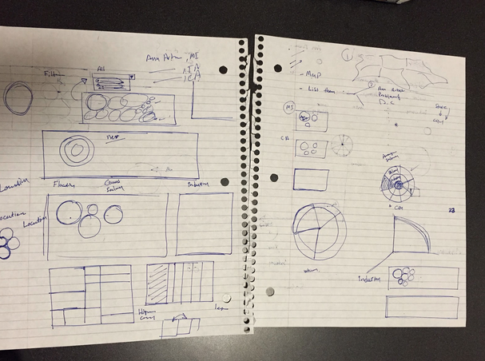
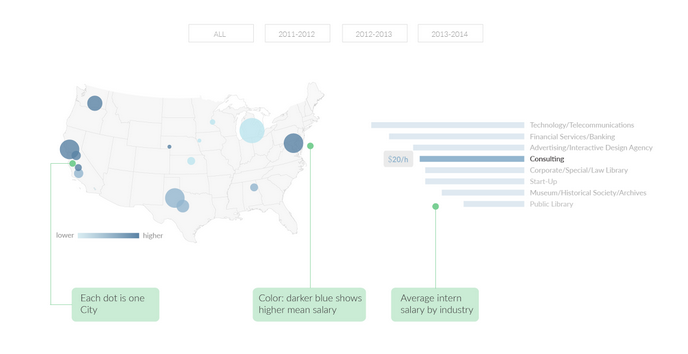
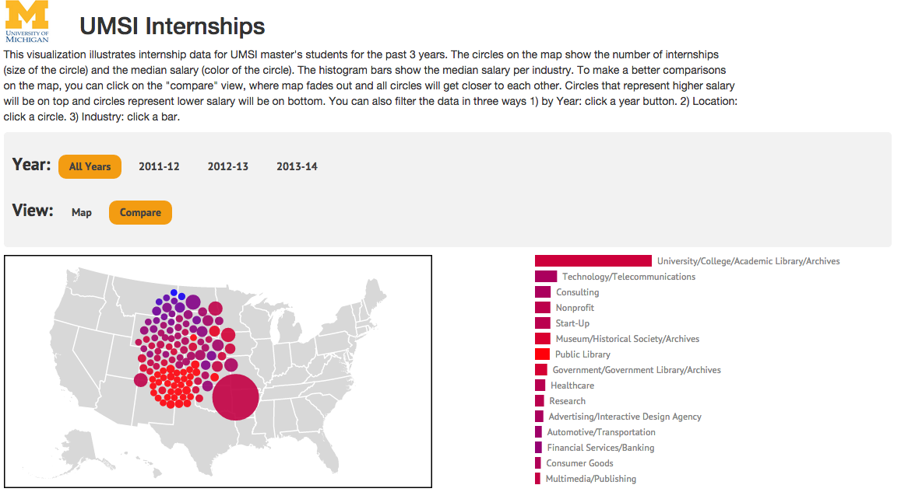

UMSI Internship Viz
In collaboration with the University of Michigan School of Information Career Development Office, I along with my team of SI students (Xin Zhang, Yuting Pu, Iyad Addawood) designed and implementated a visualization tool (implemented with D3.js) based on UMSI summer internship data. The internship was meant to help students set salary and location expectations during their internship search and to help the CDO identify patterns in internship data. Give it a try here.
Initial sketches
Intermediate sketches
Final implementation
